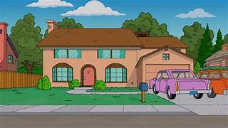

Simpson House
The famous family home located at 742 Evergreen Terrace where Homer, Marge, Bart, Lisa, and Maggie live.
Springfield is the fictional town where The Simpsons takes place. The city is filled with memorable locations, funny characters, and iconic places that have become part of television history.

The famous family home located at 742 Evergreen Terrace where Homer, Marge, Bart, Lisa, and Maggie live.

Moe's Tavern is Homer Simpson's favorite bar and one of the most iconic places in Springfield.

The famous convenience store owned by Apu where many funny moments from the series take place.